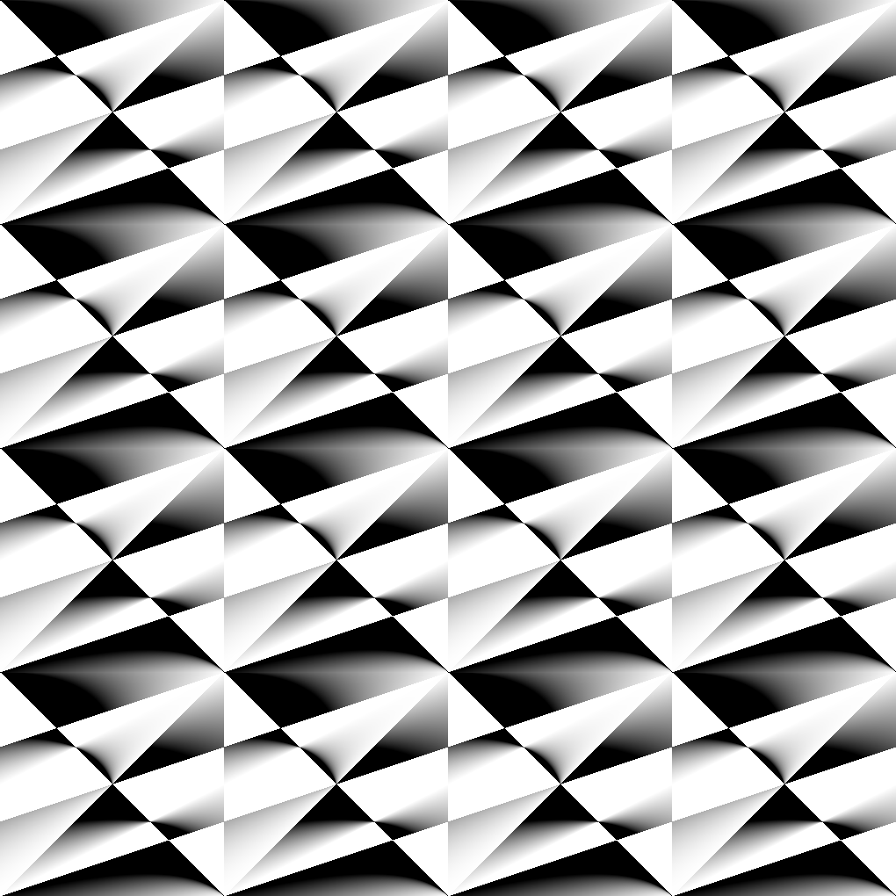
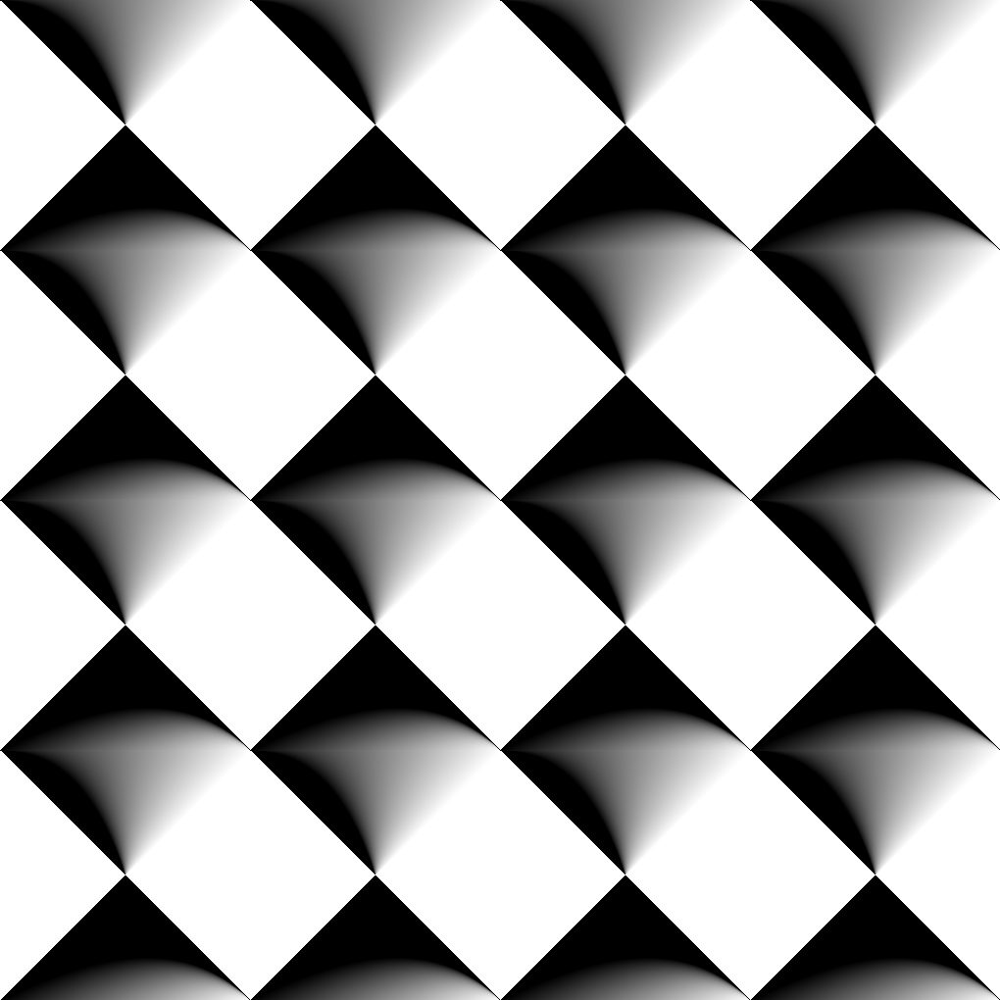
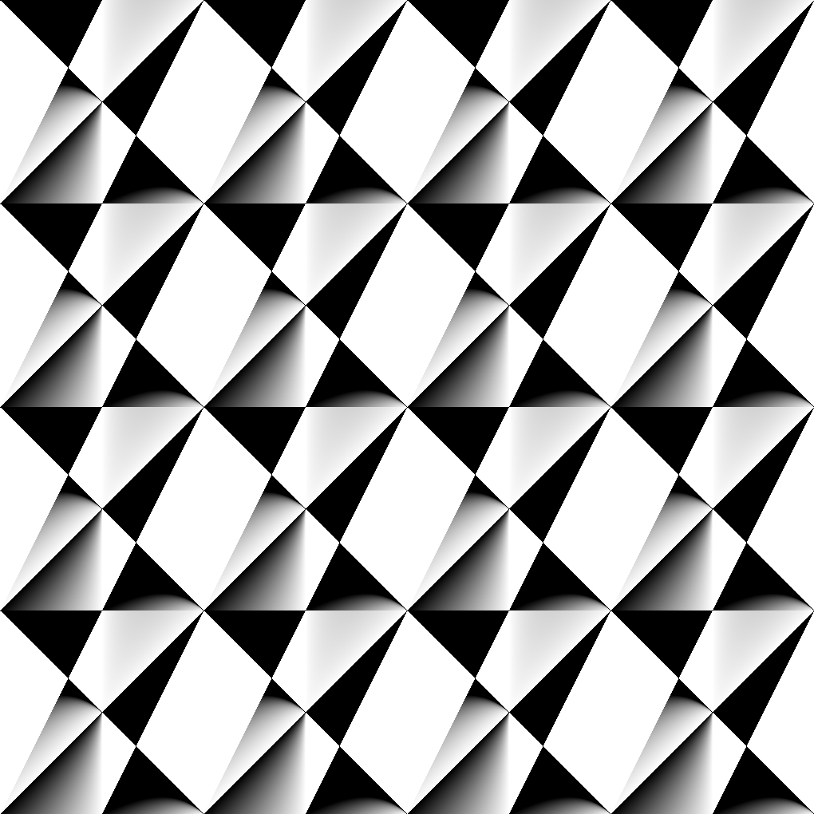
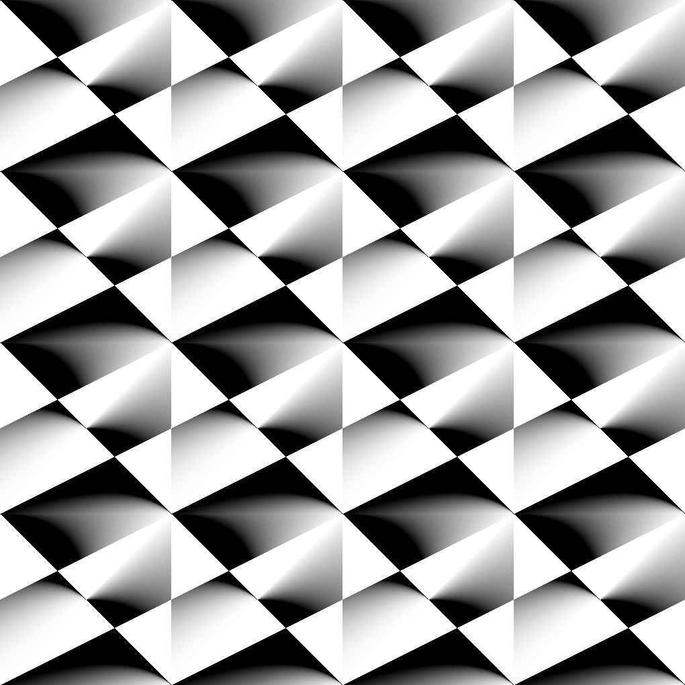
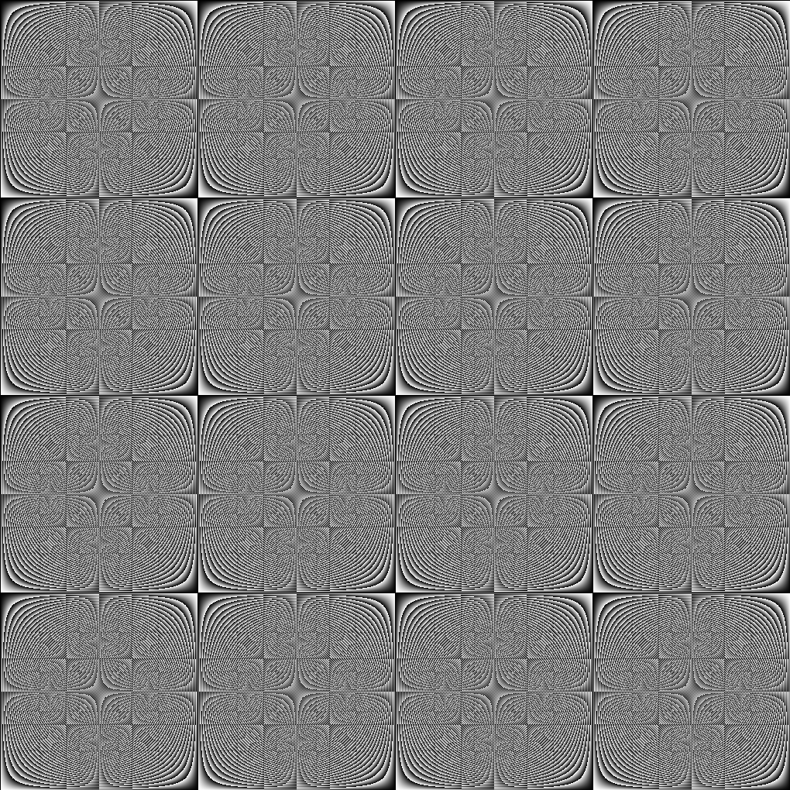
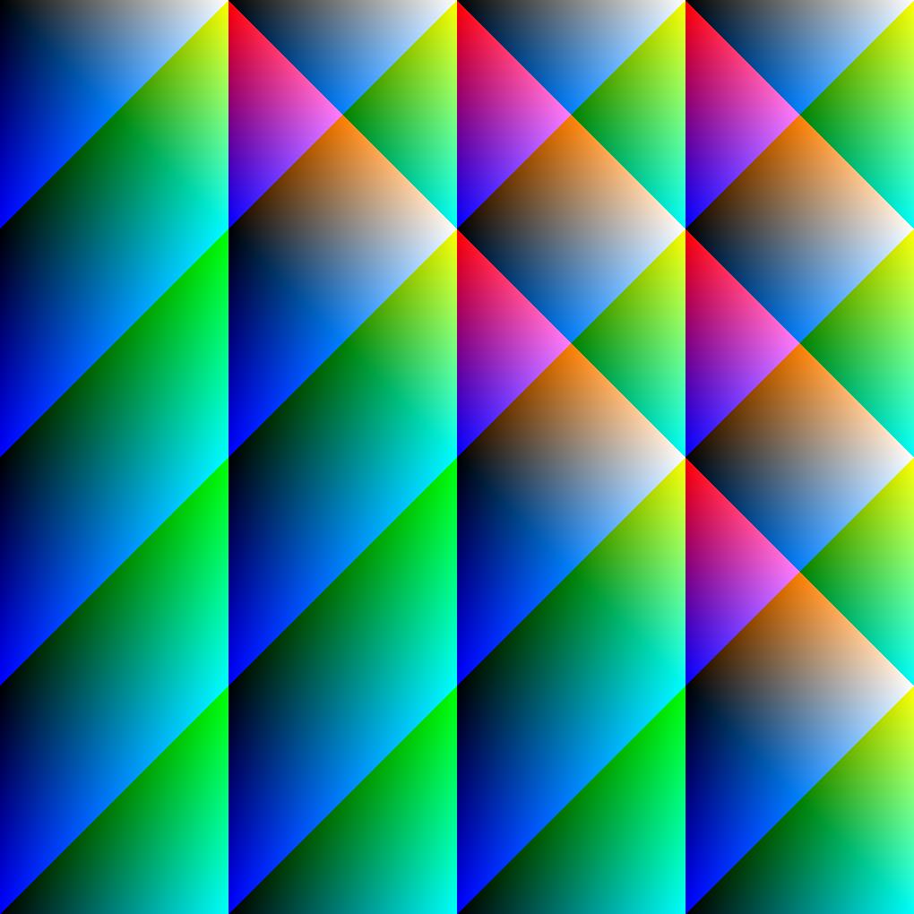
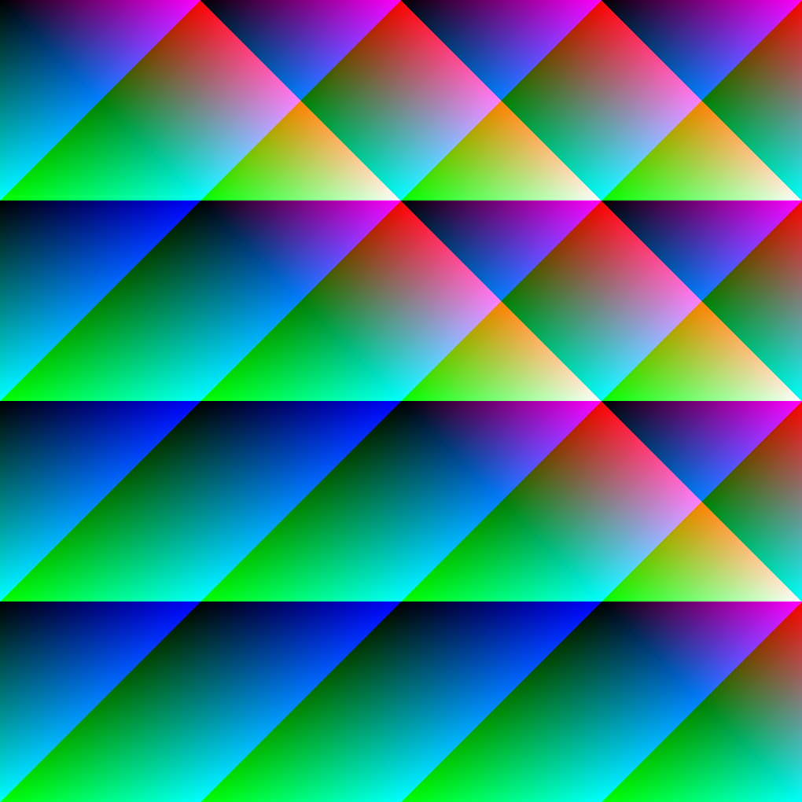
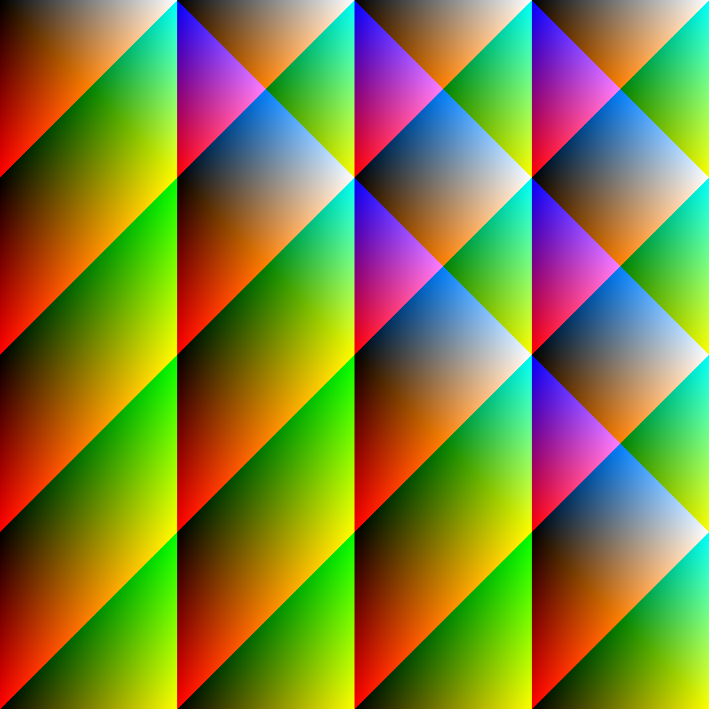
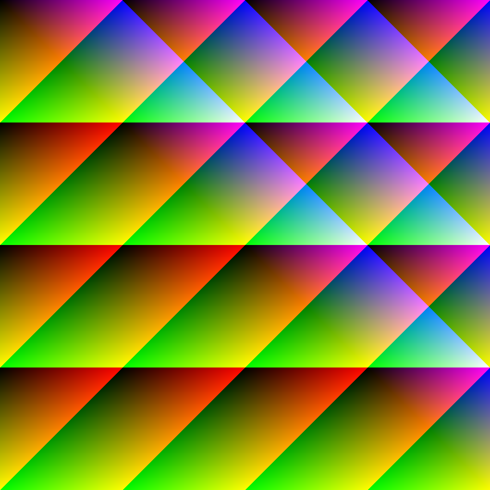

computational idealism arises from digital capitalism's attempt to escape from the abiguity present within human existence. formally introduced to me as an aesthetic by M. Beatrice Fazi in Contigent Computation by way of Daniel Tempkin's Esoprogramming and Computational Idealism, the pursuit of computational idealism is a practice that has found a place in my subconscious through my education in computer science. I am taught to make things that are simple and elegant, and this is just that. Each piece consists of a single nested for loop to loop over the pixels in the frame, with the only difference between them being the color and pixel that is chosen at a given iteration. Before I could attempt to express myself as an artist, I expressed myself as someone subconsciously in pursuit of the computationally ideal (and perhaps this is still the case), and I feel this work is representative of that.
simplification II (weighted j II) (2023)
simplification IV (unweighted) (2023)
simplification III (weighted i) (2023)
simplification I (wieghted j I) (2023)
simplification IX (2023)
simplification VII (vertical) (2023)
simplification VIII (horizontal) (2023)
simplification V (vertical) (2023)
simplification VI (horizontal) (2023)

simplification X (bi-directional gradient II) (2023)

simplification XI (bi-directional gradient I) (2023)